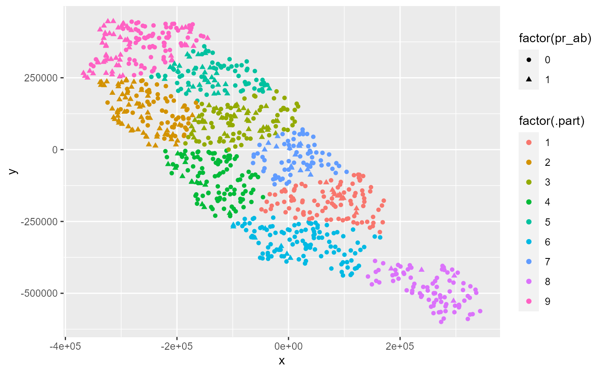
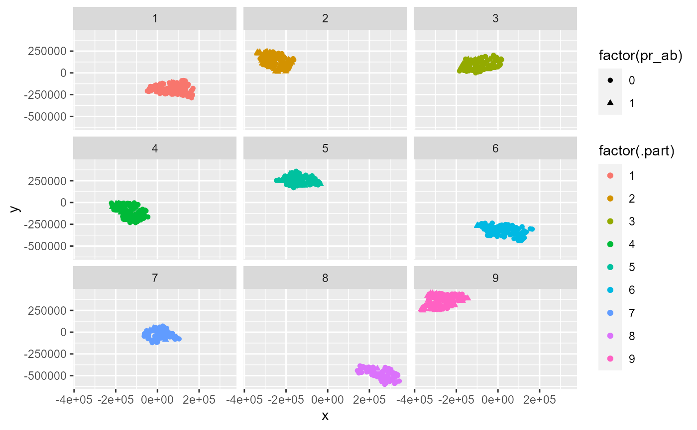
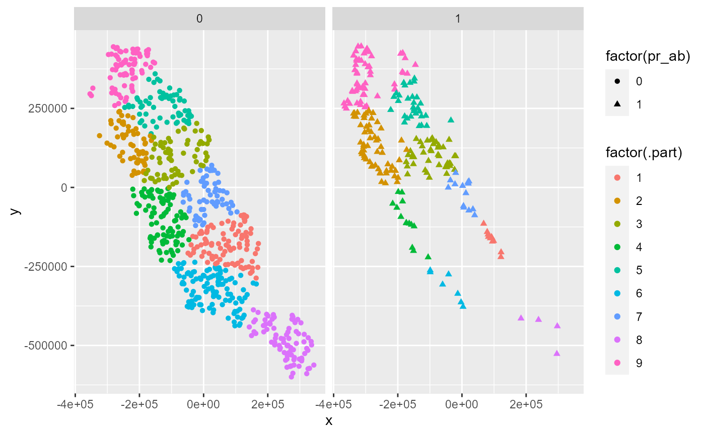

part_senv.RdThis function explores different numbers of environmental partitions based on the K-mean cluster algorithm and returns the best one suited for a given presence or presence-absences database. The selection of the best number of partition is performed automatically considering spatial autocorrelation, environmental similarity, and the number of presence and/or absence records in each partition.
part_senv( env_layer, data, x, y, pr_ab, min_n_groups = 2, max_n_groups = 10, prop = 0.5 )
| env_layer | SpatRaster. Raster with environmental variable. This will be used to evaluate spatial autocorrelation and environmental similarity between training and testing partition. Because this function calculate dissimilarity based on euclidean distances, it can only handle continuous layers, do not use categorical layers as inputs |
|---|---|
| data | data.frame. Data.frame or tibble object with presences (or presence-absence, or presences-pseudo-absence) records, and coordinates |
| x | character. Column name with longitude data |
| y | character. Column name with latitude data |
| pr_ab | character. Column with presences, presence-absence, or pseudo-absence. Presences must be represented by 1 and absences by 0 |
| min_n_groups | integer. Minimum number of groups to be tested. Default 2. |
| max_n_groups | integer. Maximum number of groups to be tested. Default 10. |
| prop | numeric. Proportion of point used for testing autocorrelation between groups (values > 0 and <=1). The smaller this number is, the faster the function will work. Default 0.5 |
A list with:
part: A tibble object with information used in 'data' arguments and a additional column .part with partition group.
best_part_info: A tibble with information of the bets partition. It contains the number of partition (n_groups), standard deviation of presences (sd_p), standard deviation of absences (sd_a), Moran's I spatial autocorrelation (spa_auto) and environmental similarity based on euclidean distance (env_sim)
write here criteria used for performing the search of the best partition (metrics and quartil selection).
part_random, and part_sblock.
# \dontrun{ require(terra) require(ggplot2) f <- system.file("external/somevar.tif", package = "flexsdm") somevar <- terra::rast(f) # Select a species spp1 <- spp %>% dplyr::filter(species == "sp1") part1 <- part_senv( env_layer = somevar, data = spp1, x = "x", y = "y", pr_ab = "pr_ab", min_n_groups = 2, max_n_groups = 10, prop = 0.2 )#>#> #>#>part1#> $part #> # A tibble: 949 x 4 #> x y pr_ab .part #> <dbl> <dbl> <dbl> <int> #> 1 -5541. -145138. 0 1 #> 2 -51981. 16322. 0 7 #> 3 -269871. 69512. 1 2 #> 4 -96261. -32008. 0 4 #> 5 269589. -566338. 0 8 #> 6 29829. -328468. 0 6 #> 7 -152691. 393782. 0 9 #> 8 -195081. 253652. 0 5 #> 9 -951. -277978. 0 6 #> 10 145929. -271498. 0 1 #> # ... with 939 more rows #> #> $best_part_info #> # A tibble: 1 x 6 #> n_parition n_groups sd_p sd_a spa_auto env_sim #> <int> <chr> <dbl> <dbl> <dbl> <dbl> #> 1 8 9 21.3 18.4 0.644 0 #>ggplot(part1$part, aes(x, y, col = factor(.part))) + geom_point(aes(shape = factor(pr_ab))) + facet_wrap(. ~ .part)ggplot(part1$part, aes(x, y, col = factor(.part))) + geom_point(aes(shape = factor(pr_ab))) + facet_wrap(. ~ pr_ab)# }